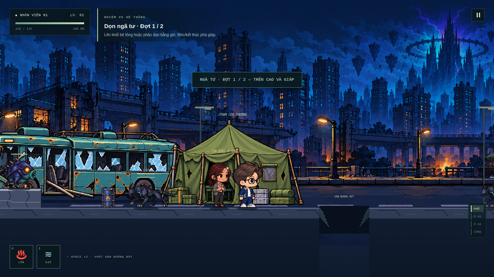
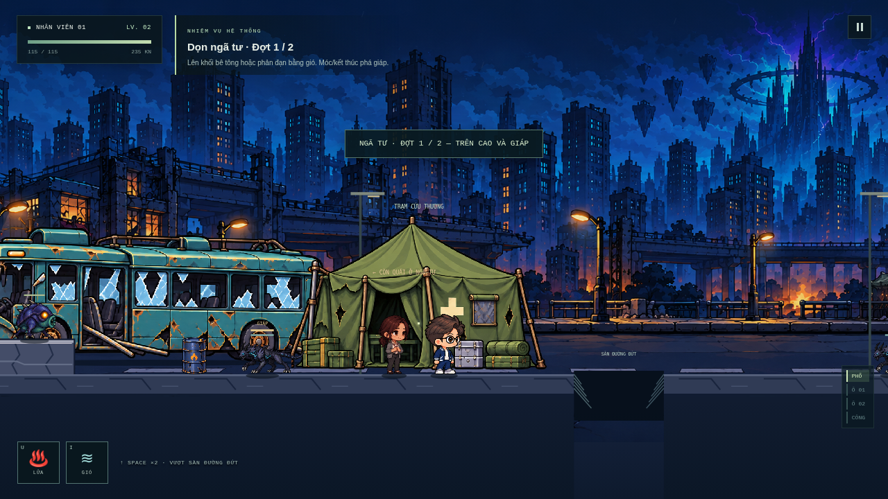

So sánh kích thước nhân vật
Hai ảnh chụp trong game ở cùng vị trí và camera. Kéo thanh để so sánh trực tiếp với bus, lều và mặt đường.
Bản trước: nhân vật cao khoảng 123 px
Bản mới: nhân vật cao khoảng 89 px · giảm thêm 28%


Hai ảnh chụp trong game ở cùng vị trí và camera. Kéo thanh để so sánh trực tiếp với bus, lều và mặt đường.

